전산응용기계제도기능사 (2009-07-12 기출문제)
1과목: 기계재료 및 요소
1. 벨트 전동장치의 특성에 대한 설명으로 틀린 것은?
- 회전비가 부정확하여 강력 고속전동이 곤란하다.
- 전동효율이 작아 각종 기계장치의 운전이 널리 사용하기에는 부적합하다.
- 종동축에 과대하중이 작용할 때는 벨트와 풀리부분이 미끄러져서 전동장치의 파손을 방지할 수 있다.
- 전동장치가 조작이 간단하고 비용이 싸다.
(정답률: 50%)

2. 42500kgf·㎜의 굽힘 모멘트가 작용하는 연강 축지름은 약 몇 ㎜인가? (단, 허용굽힘 응력은 5kgf/㎟이다.)
- 21
- 36
- 92
- 44
(정답률: 33%)
3. 축에 키 홈을 가공하지 않고 사용하는 키(key)는?
- 성크 키
- 새들 키
- 반달 키
- 스플라인
(정답률: 62%)
4. 정지상태의 냉각수의 냉각속도를 1로 했을 때 냉각 속도가 가장 빠른 것은?
- 물
- 공기
- 기름
- 소금물
(정답률: 67%)
5. 제동장치에 대한 설명으로 틀린 것은?
- 제동장치는 기계 운동부의 이탈방지 기구이다.
- 제동장치에서 가장 널리 사용되고 있는 것은 마찰브레이크이다.
- 용도는 일반기계, 자동차, 철도 차량 등에 널리 사용된다.
- 운전 중인 기계의 운동에너지를 흡수하여 운동 속도를 감소 및 정지시키는 장치이다.
(정답률: 74%)
6. 니들 롤러 베어링의 설명으로 틀린 것은?
- 지름은 바늘 모양의 롤러를 사용한다.
- 좁은 장소나 충격하중이 있는 곳에 사용할 수 없다.
- 내륜붙이 베어링과 내륜 없는 베어링이 있다.
- 축지름에 비하여 바깥지름이 작다.
(정답률: 58%)
7. 일반적으로 리벳작업을 하기 위한 구멍은 리벳 지름보다 몇 ㎜정도 커야 하는가?
- 0.5 ~ 1.0
- 1.0 ~ 1.5
- 2.5 ~ 5.0
- 5.0 ~ 10.0
(정답률: 58%)
8. 구리의 특성 설명으로 틀린 것은?
- 비중이 8.9정도이며, 용융점이 1083℃정도이다.
- 전연성이 좋으나 가공이 용이하지 않다.
- 전기 및 열의 전도성이 우수하다.
- 아름다운 광택과 귀금속적 성질이 우수하다.
(정답률: 68%)
9. 특수강 중에서 자경성(self-hardening)이 있어 담금질성과 뜨임효과를 좋게 하며, 탄소와 결합하여 탄화물을 만들어 강에 내마멸성을 좋게 하고 내식성, 내산화성을 향상시켜 강인한 강을 만드는 것은?
- Co강
- Cr강
- Ni강
- Si강
(정답률: 54%)
10. 주로 나비가 좁고 얇은 긴 보로서 하중을 지지하는 스프링은?
- 원판 스프링
- 겹판 스프링
- 인장 코일 스프링
- 압축 코일 스프링
(정답률: 52%)
2과목: 기계가공법 및 안전관리
11. 한 변의 길이 12㎜인 정사각형 단면 봉에 축선 방향으로 144kgf의 압축하중이 작용할 때 생기는 압축응력 값은 몇 kgf/㎟인가?
- 4.75
- 1.0
- 0.75
- 12.1
(정답률: 45%)
12. 면심입방격자 구조로서 전성과 연성이 우수한 금속으로 짝지어진 것은?
- 금, 크롬, 카드뮴
- 금, 알루미늄, 구리
- 금, 은, 카드뮴
- 금, 몰리브덴, 코발트
(정답률: 62%)
13. 금속은 전류를 흘리면 전류가 소모되는데 어떤 종류의 금속에서는 어느 일정온도에서 갑자기 전기저항이 ‘0’이 되는 현상은?
- 초전도 현상
- 임계 현상
- 전기장 현상
- 자기장 현상
(정답률: 73%)
14. 니켈, 크롬, 몰리브덴, 구리 등을 첨가하여 재질을 개선한 것으로 노듈러 주철, 덕타일 주철 등으로 불리는 이 주철은 내마멸성, 내열성, 내식성 등이 대단히 우수하여 자동차용 주물이나 주조용 재료로 가장 많이 쓰이는 것은?
- 칠드주철
- 구상흑연주철
- 보통주철
- 펄라이트 가단주철
(정답률: 46%)
15. 주조용 알루미늄 합금이 아닌 것은?
- Al-Cu계 합금
- Al-Si계 합금
- Al-Mg계 합금
- 두랄루민
(정답률: 62%)
16. 지름이 30㎜인 연강을 선반에서 절삭할 때, 주축을 200rpm으로 회전시키면 절삭속도는 약 몇 m/min인가?
- 10.54
- 15.48
- 18.85
- 21.54
(정답률: 56%)
17. 밀링에서 공작물의 고정과 관계없는 것은?
- 바이스에 의한 고정방법
- 앵글 플레이트에 의한 고정방법
- 지그를 이용한 고정방법
- 아버에 의한 고정방법
(정답률: 44%)
18. 통행시 안전 수칙의 설명으로 틀린 것은?(보기 내용이 정확하지 않습니다. 특히 3번과 4번이 좀 그러네요... 정답은 1번입니다. 3, 4번의 정확한 내용을 아시는분 께서는 오류 신고를 통하여 내용 작성 부탁 드립니다.)
- 통행시 뛰어 다닐 것
- 한눈을 팔지 말 것
- 윤활 및 세척으로 가공표면을 양호하게 한다.
- 절삭부의 절삭 작용을 쉽게 한다.
(정답률: 85%)
19. 선반작업 중 절삭유제의 사용 목적으로 틀린 것은?
- 가공물을 냉각시켜 정밀도 저하를 방지한다.
- 공구의 인선을 가열시켜 경도 저하를 돕는다.
- 윤활 및 세척으로 가공표면을 양호하게 한다.
- 절삭부의 절삭 작용을 쉽게 한다.
(정답률: 77%)
20. 마이크로미터 스핀들 나사의 피치가 0.5㎜이고 딤블의 원주 눈금이 100등분되어 있으면 최소 측정값은 몇 ㎜인가?
- 0.⑤
- 0.01
- 0.0⑤
- 0.001
(정답률: 72%)
21. 마이크로미터의 종류 중 게이지블록과 마이크로미터를 조합한 측정기는?
- 공기 마이크로미터
- 하이트 마이크로미터
- 나사 마이크로미터
- 외측 마이크로미터
(정답률: 62%)
22. 원통 연삭 방식 중 축방향 이송 연삭 방법을 무엇이라 하는가?
- 플랜지 연삭
- 트레버스 연삭
- 플래니터리 연삭
- 센터리스 연삭
(정답률: 35%)
23. 공구가 회전운동을 하지 않는 공작기계는?
- 선반
- 밀링 머신
- 드릴링 머신
- 보링 머신
(정답률: 67%)
24. 초음파 가공에 주로 사용되는 연삭 입자의 재질은?
- 탄화붕소
- 셀락
- 폴리에스터
- 구리합금
(정답률: 44%)
25. 탁상 드릴링 머신은 작고 깊이 얕은 구멍을 가공하기 위하여 몇㎜ 이하의 드릴을 사용하는가?
- 6
- 8
- 10
- 13
(정답률: 25%)
3과목: 기계제도
26. 다음 보기와 같이 치수 40 밑에 그은 선은 무엇을 나타내는가?
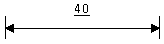
- 기준치수
- 비례척이 아닌 치수
- 다듬질 치수
- 가공치수
(정답률: 71%)
27. 절단선으로 대상물을 절단하여 단면도를 그릴 때의 설명으로 틀린 것은?
- 절단 뒷면에 나타나는 숨은선이나 중심선은 생략하지 않는다.
- 화살표는 단면을 보는 방향을 나타낸다.
- 절단한 곳을 나타내는 표시문자는 한글 또는 영문자의 대문자로 표시한다.
- 절단면은 가는 1점 쇄선으로 표시하고 절단선의 꺾인 부분과 끝 부분은 굵은 실선으로 도시한다.
(정답률: 38%)
28. 한 도면에 두 종류 이상의 선이 같은 장소에서 겹치는 경우 우선순위가 높은 것부터 올바르게 나열한 것은?
- 외형선, 숨은선, 중심선, 치수 보조선
- 외형선, 해칭선, 중심선, 절단선
- 해칭선, 숨은선, 중심선, 치수 보조선
- 외형선, 치수 보조선, 중심선, 숨은선
(정답률: 86%)
29. 로 표시된 기하공차 도면에서 ↗가 의미하는 것은?
- 원주 흔들림 공차
- 진원도 공차
- 온 흔들림 공차
- 경사도 공차
(정답률: 70%)
30. 단면도의 해칭에 관한 설명으로 올바른 것은?
- 해칭부분에 문자, 기호 등을 기입하기 위하여 해칭을 중단할 수 없다.
- 인접한 부품의 단면은 해칭선의 방향이나 간격을 변경하지 않고 동일하게 사용한다.
- 보통 해칭선의 각도는 주된 중심선에 대하여 60°로 가는 실선을 사용하여 등간격으로 그린다.
- 단면 면적이 넓은 경우에는 그 외형선의 안쪽 적절한 범위에 해칭 또는 스머징을 할 수 있다.
(정답률: 60%)
31. 재료 표시기호에서 SF340A로 표시되는 것은?
- 고속도 공구강
- 탄소강 단강품
- 기계구조용 강
- 탄소강 주강품
(정답률: 39%)
32. 제도 용지의 세로(폭)와 가로(길이)의 비는?
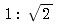
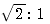
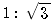
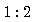
(정답률: 75%)
33. 다음 기하공차 중에서 데이텀이 필요 없이 단독형체로 적용되는 것은?
- 평행도
- 진원도
- 동심도
- 대칭도
(정답률: 60%)
34. 다음 중 도형내의 특정한 부분이 평면이라는 것을 나타낼 때 사용하는 선은?
- 2점 쇄선
- 1점 쇄선
- 굵은 실선
- 가는 실선
(정답률: 52%)
35. 그림에서 사용된 치수의 배치 방법으로 옳은 것은?
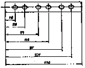
- 직렬 치수 기입
- 병렬 치수 기입
- 누진 치수 기입
- 좌표 치수 기입
(정답률: 55%)
36. 다음의 투상도 선정과 배치에 관한 설명 중 틀린 것은?
- 물체의 모양과 특징을 가장 잘 나타낼 수 있는 면을 정면도로 선정한다.
- 길이가 긴 물체는 길이 방향으로 놓은 자연스러운 상태로 그린다.
- 투상도 끼리 비교 대조가 용이하도록 투상도를 선정한다.
- 정면도 하나로 그 물체의 형태를 알 수 있어도 측면이나 평면도를 꼭 그려야 한다.
(정답률: 60%)
37. 다음 중 가장 고운 다듬면을 나타내는 것은?
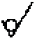
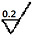
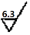
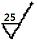
(정답률: 72%)
38. 다음과 같은 치수가 있을 경우 끼워 맞춤의 종류로 맞는 것은?
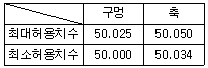
- 헐거운 끼워 맞춤
- 억지 끼워 맞춤
- 중간 끼워 맞춤
- 상대 끼워 맞춤
(정답률: 76%)
39. 가공에 의한 커터의 줄무늬가 기호를 기입한 면의 중심에 대하여 대략 방사상(레이디얼 모양)인 설명도는?
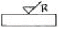
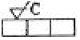
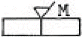
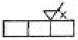
(정답률: 84%)
40. 다음 설명과 관련된 투상법은?
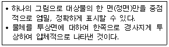
- 사 투상법
- 등각 투상법
- 투시 투상법
- 부등각 투상법
(정답률: 40%)
41. 도면에서 구멍의 치수가
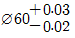
로 표기되어 있을 때, 아래치수 허용차 값은?- +0.03
- +0.01
- -0.02
- -0.01
(정답률: 59%)
42. 헐거운 끼워 맞춤에서 구멍의 최소 허용 치수와 축의 최대허용 치수와의 차이 값을 무엇이라 하는가?
- 최대 죔새
- 최대 틈새
- 최소 죔새
- 최소 틈새
(정답률: 51%)
43. 다음 등각 투상도에서 화살표 방향에서 본 투상도는?
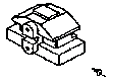
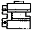
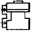
(정답률: 65%)
44. 다음 정면도와 우측면에 알맞은 평면도는?(오류 신고가 접수된 문제입니다. 반드시 정답과 해설을 확인하시기 바랍니다.)
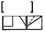
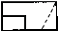
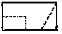
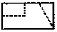
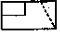
(정답률: 64%)
45. KS 부문별 분류 기호에서 기계를 나타내는 것은?
- KS A
- KS B
- KS K
- KS H
(정답률: 88%)
46. 키의 호칭 방법으로 맞는 것은?
- KS B 1311 평행키 10 X 8 X 25 양 끝 둥금 SM45C
- 양 끝 둥금 KS B 1311 평행키 10 X 8 X 25 SM45C
- KS B 1311 SM45C 평행키 10 X 8 X 25 양 끝 둥금
- 평행키 10 X 8 X 25 양 끝 둥금 SM45C KS B 1311
(정답률: 51%)
47. 호칭번호가 62/22인 깊은 홈 볼베어링의 안지름 치수는 몇㎜인가?
- 22
- 110
- 310
- 55
(정답률: 52%)
48. 코일 스프링의 제도방법 중 틀린 것은?
- 원칙적으로 무하중 상태로 그린다.
- 그림 안에 기입하기 힘든 사항은 일괄하여 요목표에 표시한다.
- 코일스프링의 중간부분을 생략할 때는 생략부분을 파단으로 긋는다.
- 특별한 단서가 없는 한 모두 오른쪽 감기로 도시한다.
(정답률: 65%)
49. 스프로킷 휠의 도시방법으로 맞는 것은?
- 바깥지름 - 굵은 실선
- 피치원 - 가는 실선
- 이뿌리원 - 가는 1점 쇄선
- 축직각 단면으로 도시할 때 이뿌리선 - 굵은 파선
(정답률: 68%)
50. 다음은 파이프 도시기호를 나타낸 것이다. 파이프 안에 흐르는 유체의 종류는?
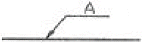
- 공기
- 가스
- 유류
- 수증기
(정답률: 81%)
51. 기어의 제도시 잇수(Z)가 20개이고 모듈(M)이 2인 보통치형의 기어를 그리려면 이끝원의 지름은 얼마인가?
- 38㎜
- 40㎜
- 42㎜
- 44㎜
(정답률: 55%)
52. “M24 - 6H/5g"로 표시된 나사의 설명으로 틀린 것은?
- 미터나사
- 호칭 지름은 24㎜
- 암나사 5급
- 수나사 5급
(정답률: 61%)
53. 용접부 표면의 형상에서 끝단부를 매끄럽게 함을 표시하는 보조 기호는?
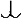
(정답률: 45%)
54. 다음 중 나사의 도시방법으로 옳은 것은?
- 암나사의 안지름을 표시하는 선은 가는 실선으로 그린다.
- 완전 나사부와 불완전 나사부의 경계선은 가는 실선으로 그린다.
- 수나사와 암나사 결합부 단면은 암나사로 나타낸다.
- 골 부분에 대한 불완전 나사부는 축선에 대하여 30°의 가는 실선으로 나타낸다.
(정답률: 49%)
55. 축의 도시방법에 대한 설명으로 옳은 것은?
- 축은 길이 방향으로 단면 도시를 할 수 있다.
- 축 끝의 모따기는 폭의 치수만 기입한다.
- 긴 축은 중간을 파단하여 짧게 그릴 수 없다.
- 널링을 도시할 때 빗줄인 경우 축선에 대하여 30°로 엇갈리게 그린다.
(정답률: 56%)
56. 베벨기어에서 피치원은 무슨 선으로 표시하는가?
- 가는 1점 쇄선
- 굵은 1점 쇄선
- 가는 2점 쇄선
- 굵은 실선
(정답률: 77%)
57. 다음 중 CAD시스템의 입력장치에 해당되는 것은?
- 라이트펜
- 플로터
- 프린터
- 모니터
(정답률: 80%)
58. 컴퓨터의 처리 속도 단위 중 PS(피코 초)란?
- 10-3
- 10-6
- 10-9
- 10-12
(정답률: 62%)
59. 그림과 같은 정원뿔을 단면선을 따라 평면으로 절단시킨 경우 구성되는 단면 형태는?
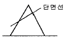
- 쌍곡선
- 포물선
- 타원
- 원
(정답률: 79%)
60. 일반적으로 CAD시스템에서 수행되는 3차원 모델링의 종류가 아닌 것은?
- 와이어 프레임 모델링
- 서피스 모델링
- 솔리드 모델링
- 시스템 모델링
(정답률: 78%)